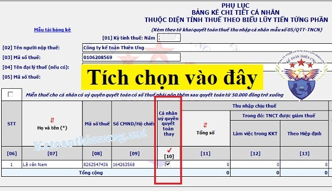

Điều kiện ủy quyền quyết toán thuế TNCN năm 2025: Đối tượng, các trường hợp được ủy quyền quyết toán thuế TNCN; Thời điểm làm giấy ủy quyền quyết toán thuế TNCN... Kế toán Diệu Tâm xin tổng hợp những quy định về ủy quyền quyết toán thuế TNCN mới nhất.
I. Tổng quan về điều kiện để được ủy quyền QTT TNCN:
|
Các trường hợp đủ điều kiện để thực hiện ủy quyền quyết toán thay |
Các trường hợp không đủ điều kiện để thực hiện ủy quyền quyết toán thay |
| Người lao động ký hợp đồng lao động từ 3 tháng trở lên tại 1 nơi duy nhất |
+ Người lao động ký HĐLĐ dưới 3 tháng + Người lao động không ký HĐLĐ mà ký các loại hợp đồng như thử việc, khoán việc, dịch vụ, CTV, học nghề, đào tạo... + Người lao động ký HĐLĐ từ 3 tháng trở lên tại nhiều nơi trong năm tính thuế |
| Thực tế đang làm việc tại đó tại thời điểm DN thực hiện QTT TNCN (kể cả trường hợp làm việc dưới 12 tháng) | Đã nghỉ việc tại thời điểm DN thực hiện QTT TNCN |
|
Trường hợp trong năm tính thuế, người lao động có thêm thu nhập vãng lai (thu nhập từ HĐLĐ dưới 3 tháng hoặc không ký HĐLĐ) tại nơi khác thì phải đáp ứng được các điều kiện sau:
+ Có thu nhập vãng lai bình quân tháng trong năm tính thuế không quá 10.000.000đ
(Lấy tổng thu nhập vãng lai trong năm chia cho 12 để ra 1 tháng bình quân, rồi so sánh với 10 triệu đồng) (Tổng thu nhập vãng lai trong năm < = 120 triệu) + Đã bị khấu trừ thuế TNCN theo tỷ lệ 10% tại nơi đó. |
Trường hợp trong năm tính thuế, Người lao động có thêm thu nhập vãng lai tại nơi khác mà: + Có thu nhập vãng lai bình quân tháng trong năm tính thuế quá 10.000.000đ (Có tổng thu nhập vãng lai trong năm quá 120 triệu) + Hoặc cá nhân chưa bị khấu trừ thuế theo tỷ lệ 10% (do nhận được thu nhập dưới 2 triệu đồng/lần chi trả, hoặc làm cam kết thu nhập) |
- Lưu ý:
+ Người lao động muốn ủy quyển QT phải đáp ứng đầy đủ và đồng thời tất cả các điều kiện nêu trên
+ Người lao động làm ủy quyền quyết toán phải có MST TNCN tại thời điểm ủy quyền (không có MST TNCN thì không được ủy quyền) (Vì vậy cá nhân chưa có MST TNCN muốn ủy quyền quyết toán thì phải làm thủ tục đăng ký MST TNCN trước đã. Chi tiết các bạn xem tại đây: Cách đăng ký mã số thuế TNCN)
+ Doanh nghiệp không được nhận ủy quyền quyết toán thay cho các lao động đã được cấp chứng từ khấu trừ thuế TNCN.
+ Trường hợp cá nhân là người lao động được điều chuyển từ tổ chức cũ đến tổ chức mới do tổ chức cũ thực hiện sáp nhập, hợp nhất, chia, tách, chuyển đổi loại hình doanh nghiệp hoặc tổ chức cũ và tổ chức mới trong cùng một hệ thống (như Tập đoàn, Tổng công ty, Công ty mẹ - con, Trụ sở chính và chi nhánh) thì cá nhân được ủy quyền quyết toán thuế cho tổ chức mới.
Tổ chức mới có trách nhiệm quyết toán thuế TNCN theo ủy quyền của cá nhân đối với cả phần thu nhập do tổ chức cũ chi trả và tổ chức trả thu nhập mới thu lại chứng từ khấu trừ thuế TNCN do tổ chức trả thu nhập cũ đã cấp cho người lao động (nếu có).
+ Đối với trường hợp Người lao động có thu nhập vãng lãi tại nơi khác và đã bị khấu trừ thuế TNCN theo tỷ lệ 10% thì:
+/ Nếu không có yêu cầu quyết toán thuế đối với phần thu nhập vãng lai đã bị khấu trừ nêu trên thì được ủy quyền QT
+/ Nếu có yêu cầu quyết toán thuế đối với phần thu nhập vãng lai đã bị khấu trừ theo tỷ lệ 10% đó thì cá nhân phải tự làm QTT TNCN trực tiếp với CQT
+/ Nếu có yêu cầu quyết toán thuế đối với phần thu nhập vãng lai đã bị khấu trừ theo tỷ lệ 10% đó thì cá nhân phải tự làm QTT TNCN trực tiếp với CQT
II. Chi tiết quy định về ủy quyền quyết toán thuế TNCN:
Căn cứ theo Khoản 6 Điều 8 Nghị định 126/2020/NĐ-CP quy định như sau:
d) Thuế thu nhập cá nhân đối với tổ chức, cá nhân trả thu nhập chịu thuế thu nhập cá nhân từ tiền lương, tiền công; cá nhân có thu nhập từ tiền lương, tiền công ủy quyền quyết toán thuế cho tổ chức, cá nhân trả thu nhập; cá nhân có thu nhập từ tiền lương, tiền công trực tiếp quyết toán thuế với cơ quan thuế. Cụ thể như sau:
d.1) Tổ chức, cá nhân trả thu nhập từ tiền lương, tiền công có trách nhiệm khai quyết toán thuế và quyết toán thay cho các cá nhân có ủy quyền do tổ chức, cá nhân trả thu nhập chi trả, không phân biệt có phát sinh khấu trừ thuế hay không phát sinh khấu trừ thuế. Trường hợp tổ chức, cá nhân không phát sinh trả thu nhập thì không phải khai quyết toán thuế thu nhập cá nhân. Trường hợp cá nhân là người lao động được điều chuyển từ tổ chức cũ đến tổ chức mới do tổ chức cũ thực hiện sáp nhập, hợp nhất, chia, tách, chuyển đổi loại hình doanh nghiệp hoặc tổ chức cũ và tổ chức mới trong cùng một hệ thống thì tổ chức mới có trách nhiệm quyết toán thuế theo ủy quyền của cá nhân đối với cả phần thu nhập do tổ chức cũ chi trả và thu lại chứng từ khấu trừ thuế thu nhập cá nhân do tổ chức cũ đã cấp cho người lao động (nếu có).
d.2) Cá nhân cư trú có thu nhập từ tiền lương, tiền công ủy quyền quyết toán thuế cho tổ chức, cá nhân trả thu nhập, cụ thể như sau:
Cá nhân có thu nhập từ tiền lương, tiền công ký hợp đồng lao động từ 03 tháng trở lên tại một nơi và thực tế đang làm việc tại đó vào thời điểm tổ chức, cá nhân trả thu nhập thực hiện việc quyết toán thuế, kể cả trường hợp không làm việc đủ 12 tháng trong năm. Trường hợp cá nhân là người lao động được điều chuyển từ tổ chức cũ đến tổ chức mới theo quy định tại điểm d.1 khoản này thì cá nhân được ủy quyền quyết toán thuế cho tổ chức mới.
Cá nhân có thu nhập từ tiền lương, tiền công ký hợp đồng lao động từ 03 tháng trở lên tại một nơi và thực tế đang làm việc tại đó vào thời điểm tổ chức, cá nhân trả thu nhập quyết toán thuế, kể cả trường hợp không làm việc đủ 12 tháng trong năm; đồng thời có thu nhập văng lai ở các nơi khác bình quân tháng trong năm không quá 10 triệu đồng và đã được khấu trừ thuế thu nhập cá nhân theo tỷ lệ 10% nếu không có yêu cầu quyết toán thuế đối với phần thu nhập này.
d.3) Cá nhân cư trú có thu nhập từ tiền lương, tiền công trực tiếp khai quyết toán thuế thu nhập cá nhân với cơ quan thuế trong các trường hợp sau đây:
Có số thuế phải nộp thêm hoặc có số thuế nộp thừa đề nghị hoàn hoặc bù trừ vào kỳ khai thuế tiếp theo, trừ các trường hợp sau: cá nhân có số thuế phải nộp thêm sau quyết toán của từng năm từ 50.000 đồng trở xuống; cá nhân có số thuế phải nộp nhỏ hơn số thuế đã tạm nộp mà không có yêu cầu hoàn thuế hoặc bù trừ vào kỳ khai thuế tiếp theo; cá nhân có thu nhập từ tiền lương, tiền công ký hợp đồng lao động từ 03 tháng trở lên tại một đơn vị, đồng thời có thu nhập vãng lai ở các nơi khác bình quân tháng trong năm không quá 10 triệu đồng và đã được khấu trừ thuế thu nhập cá nhân theo tỷ lệ 10% nếu không có yêu cầu thì không phải quyết toán thuế đối với phần thu nhập này; cá nhân được người sử dụng lao động mua bảo hiểm nhân thọ (trừ bảo hiểm hưu trí tự nguyện), bảo hiểm không bắt buộc khác có tích lũy về phí bảo hiểm mà người sử dụng lao động hoặc doanh nghiệp bảo hiểm đã khấu trừ thuế thu nhập cá nhân theo tỷ lệ 10% trên khoản tiền phí bảo hiểm tương ứng với phần người sử dụng lao động mua hoặc đóng góp cho người lao động thì người lao động không phải quyết toán thuế thu nhập cá nhân đối với phần thu nhập này.
Cá nhân có mặt tại Việt Nam tính trong năm dương lịch đầu tiên dưới 183 ngày, nhưng tính trong 12 tháng liên tục kể từ ngày đầu tiên có mặt tại Việt Nam là từ 183 ngày trở lên.
Cá nhân là người nước ngoài kết thúc hợp đồng làm việc tại Việt Nam khai quyết toán thuế với cơ quan thuế trước khi xuất cảnh. Trường hợp cá nhân chưa làm thủ tục quyết toán thuế với cơ quan thuế thì thực hiện ủy quyền cho tổ chức trả thu nhập hoặc tổ chức, cá nhân khác quyết toán thuế theo quy định về quyết toán thuế đối với cá nhân. Trường hợp tổ chức trả thu nhập hoặc tổ chức, cá nhân khác nhận ủy quyền quyết toán thì phải chịu trách nhiệm về số thuế thu nhập cá nhân phải nộp thêm hoặc được hoàn trả số thuế nộp thừa của cá nhân.
Cá nhân cư trú có thu nhập từ tiền lương, tiền công đồng thời thuộc diện xét giảm thuế do thiên tai, hoả hoạn, tai nạn, bệnh hiểm nghèo ảnh hưởng đến khả năng nộp thuế thì không ủy quyền cho tổ chức, cá nhân trả thu nhập quyết toán thuế thay mà phải trực tiếp khai quyết toán với cơ quan thuế theo quy định.
Một vài các ví dụ về điều kiện ủy quyền quyết toán thuế TNCN để các bạn tham khảo:
1. Cá nhân ký hợp đồng lao động từ 3 tháng trở lên tại một nơi và thời điểm quyết toán thuế TNCN vẫn đang làm việc tại DN đó. (kể cả trường hợp không làm việc đủ 12 tháng trong năm).
Ví dụ: Trong năm 2025, Nhân viên A chỉ ký 01 hợp đồng lao động 36 tháng (Tức là loại HĐLĐ có thời hạn từ 3 tháng trở lên) tại Công ty Tư vấn Minh Phúc bắt đầu từ tháng 4/2025.
-> Đến thời điểm quyết toán thuế thuế TNCN năm 2025 nhân viên A vẫn đang làm việc tại đây.
=> Thì được ủy quyền quyết toán thuế tại Cty Diệu Tâm
2. Cá nhân ký hợp đồng lao động từ 3 tháng trở lên tại một nơi và thời điểm quyết toán thuế TNCN vẫn đang làm việc tại DN đó. Đồng thời có thu nhập văng lai ở các nơi khác bình quân tháng trong năm không quá 10 triệu đồng và đã được khấu trừ thuế TNCN theo tỷ lệ 10% nếu không có yêu cầu quyết toán thuế đối với phần thu nhập này.
Ví dụ: Trong năm 2025, Nhân viên A ký hợp đồng lao động vô thời hạn (Tức là loại HĐLĐ có thời hạn từ 3 tháng trở lên) tại Kế toán Diệu Tâm bắt đầu từ tháng 4/2025 và ký 1 hợp đồng khoán việc với Công ty B mức lương là 5tr (khoản này thì Cty B đã khấu trừ 10%).
-> Đến thời điểm quyết toán thuế thuế TNCN năm 2025 nhân viên A vẫn đang làm việc tại Diệu Tâm và không có nhu cầu quyết toán thuế đối với phần thu nhập vãng lai 5tr đã bị khấu trừ thuế này
=> Thì được ủy quyền quyết toán thuế tại Công Ty Diệu Tâm (Lưu ý: Công ty Diệu Tâm chỉ được quyết toán đối với phần thu nhập do Cty Diệu Tâm chi trả thôi, không được cộng thu nhập của công ty B vào tờ khai QTT TNCN của công ty Diệu Tâm).
- Nếu nhân viên A có nhu cầu quyết toán thuế đối với phần thu nhập vãng lai (5 tr) => Thì nhân viên A phải trực tiếp đi quyết toán với Cơ quan thuế
+) Nhân viên A có thể yêu cầu Công ty Diệu Tâm và Cty B (Cty trả thu nhập vãng lai) => Cấp chứng từ khấu trừ thuế TNCN, để tự đi Quyết toán thuế trực tiếp với Cơ quan thuế.
-----------------------------------------------------------------------
- Cá nhân ủy quyền cho tổ chức trả thu nhập quyết toán thay theo Mẫu 08/UQ-QTT-TNCN theo Thông tư 80/2021/TT-BTC)
- Trường hợp tổ chức trả thu nhập có số lượng lớn người lao động ủy quyền quyết toán thuế thì tổ chức trả thu nhập có thể lập danh sách các cá nhân ủy quyền trong đó phản ánh đầy đủ các nội dung tại mẫu số 08/UQ-QTT-TNCN, đồng thời cam kết tính chính xác, trung thực và chịu trách nhiệm trước pháp luật về số liệu, nội dung trong danh sách.
-------------------------------------------------------------------------------------
------------------------------------------------------------------
2. Cá nhân có thu nhập từ tiền lương, tiền công ký hợp đồng lao động từ 03 tháng trở lên tại một đơn vị nhưng vào thời điểm ủy quyền quyết toán thuế không làm việc tại DN đó.Ví dụ:
- Nhân viên D vào làm việc tại Kế toán Diệu Tâm từ tháng 4/2025 (ký hợp đồng lao động > 3 tháng và chỉ có thu nhập tại đây).
-> Đến thời điểm Cty nộp Tờ khai quyết toán thuế thuế TNCN năm 2025 nhân viên A KHÔNG còn làm việc tại đây.
=> Thì KHÔNG được ủy quyền quyết toán thuế tại Cty Diệu Tâm.
------------------------------------------------------------------------------------------------
3. Có thu nhập vãng lai mà chưa khấu trừ thuế TNCN thì không được ủy quyền:
- Cá nhân có thu nhập từ tiền lương, tiền công ký hợp đồng lao động từ 03 tháng trở lên tại một đơn vị, đồng thời có thu nhập vãng lai chưa khấu trừ thuế hoặc khấu trừ thuế chưa đủ (bao gồm trường hợp chưa đến mức khấu trừ và đã đến mức khấu trừ nhưng không khấu trừ).
Ví dụ:
- Năm 2025, Ông Quốc Huy có thu nhập từ tiền lương theo hợp đồng lao động trên 03 tháng tại Công ty M.
- Tháng 3/2025 ông B có thu nhập vãng lai tại Công ty N là 20 triệu đồng đã khấu trừ thuế 10%.
- Tháng 10/2025 ông B có thu nhập vãng lai tại Công ty K là 1,5 triệu đồng chưa đến mức khấu trừ thuế.
=> Như vậy, trong năm 2025 Ông Quốc Huy có một khoản thu nhập chưa khấu trừ thuế.
=> Như vậy Ông Quốc Huy không ủy quyền quyết toán tại Công ty M, mà trực tiếp quyết toán thuế với cơ quan thuế.
|
Công văn số 3556/TCT-DNNCN ngày 17/9/2021 của Tổng cục Thuế Theo đó, cá nhân có thu nhập từ tiền lương, tiền công ký hợp đồng lao động từ 03 (ba) tháng trở lên tại một đơn vị mà có thêm thu nhập vãng lai ở các nơi khác bình quân tháng trong năm không quá 10 (mười) triệu đồng, nếu chưa được đơn vị trả thu nhập khấu trừ thuế tại nguồn theo tỷ lệ 10% => Thì không được ủy quyền quyết toán thuế TNCN cho cơ quan chi trả mà phải tự khai quyết toán thuế TNCN đối với cả phần thu nhập này. Theo Công văn 4885/CT-TTHT ngày 30/01/2018 của Cục thuế Hà Nội. "Trường hợp người lao động đang làm việc tại Ngân hàng Mizuho Bank chi nhánh Hà Nội có thêm thu nhập vãng lai ở các nơi khác mà những đơn vị này không kê khai và khấu trừ thuế thu nhập cá nhân đối với phần thu nhập chi trả cho cá nhân đó thì cá nhân không được ủy quyền cho Ngân hàng Mizuho Bank chi nhánh Hà Nội quyết toán thuế thu nhập cá nhân thay cho cá nhân." |
----------------------------------------------------------------------------------------
Cá nhân sau khi đã ủy quyền quyết toán thuế, tổ chức trả thu nhập đã thực hiện quyết toán thuế thay cho cá nhân, nếu phát hiện cá nhân thuộc diện trực tiếp quyết toán thuế với cơ quan thuế thì tổ chức trả thu nhập không điều chỉnh lại quyết toán thuế TNCN của tổ chức trả thu nhập, chỉ cấp chứng từ khấu trừ thuế cho cá nhân theo số quyết toán và ghi vào góc dưới bên trái của chứng từ khấu trừ thuế nội dung: “Công ty ... đã quyết toán thuế TNCN thay cho Ông/Bà .... (theo ủy quyền) tại dòng (số thứ tự) ... của Phụ lục Bảng kê 05-1/BK-TNCN” để cá nhân trực tiếp quyết toán thuế với cơ quan thuế.
Trường hợp tổ chức, cá nhân trả thu nhập sử dụng chứng từ khấu trừ thuế TNCN điện tử thì in chuyển đổi từ chứng từ khấu trừ thuế TNCN điện tử gốc và ghi nội dung nêu trên vào bản in chuyển đổi để cung cấp cho người nộp thuế.
| Cần làm gì khi công ty lỡ quyết toán thay cho người thuộc diện trực tiếp quyết toán thuế TNCN | ||||||
| Theo Công văn số 4917/TCT-DNNCN ngày 29/10/2024 của Tổng cục Thuế về chính sách thuế thu nhập cá nhân thì thực hiện như sau: | ||||||
Kính gửi: Cục Thuế tỉnh Thái Nguyên.
Tổng cục Thuế nhận được công văn số 3717/CTTNG-HKDCN ngày 20/8/2024 của Cục Thuế tỉnh Thái Nguyên nêu vướng mắc về hồ sơ hoàn thuế TNCN năm 2023 của cá nhân người nộp thuế (NNT) là Ông Nguyễn Văn Phong (ông Phong), Mã số thuế: 8764028434. Vấn đề này, Tổng cục Thuế có ý kiến như sau: - Tại khoản 2 Điều 4 Nghị định số 123/2020/NĐ-CP ngày 19/10/2020 của Chính phủ quy định về hóa đơn chứng từ quy định: “Điều 4. Nguyên tắc lập, quản lý, sử dụng hóa đơn, chứng từ … 2. Khi khấu trừ thuế thu nhập cá nhân, khi thu thuế, phí, lệ phí, tổ chức khấu trừ thuế, tổ chức thu phí, lệ phí, tổ chức thu thuế phải lập chứng từ khấu trừ thuế, biên lai thu thuế, phí, lệ phí giao cho người có thu nhập bị khấu trừ thuế, người nộp thuế, nộp phí, lệ phí và phải ghi đầy đủ các nội dung theo quy định tại Điều 32 Nghị định này. Trường hợp sử dụng biên lai điện tử thì phải theo định dạng chuẩn dữ liệu của cơ quan thuế. Trường hợp cá nhân ủy quyền quyết toán thuế thì không cấp chứng từ khấu trừ thuế TNCN.” - Tại điểm d.2 khoản 6 Điều 8 Nghị định số 126/2020/NĐ-CP ngày 19/10/2020 của Chính phủ quy định chi tiết một số điều của Luật quản lý thuế quy định: “d.2) Cá nhân cư trú có thu nhập từ tiền lương, tiền công ủy quyền quyết toán thuế cho tổ chức, cá nhân tra thu nhập, cụ thể như sau: Cả nhân có thu nhập từ tiền lương, tiền công ký hợp đồng lao động từ 03 tháng trở lên tại một nơi và thực tế đang làm việc tại đó vào thời điểm tổ chức, cá nhân trả thu nhập thực hiện việc quyết toán thuế, kể cả trường hợp không làm việc đủ 12 tháng trong năm. Trường hợp cá nhân là người lao động được điều chuyển từ tổ chức cũ đến tổ chức mới theo quy định tại điểm d.1 khoản này thì cá nhân được ủy quyền quyết toán thuế cho tổ chức mới. Cá nhân có thu nhập từ tiền lương, tiền công ký hợp đồng lao động từ 03 tháng trở lên tại một nơi và thực tế đang làm việc tại đó vào thời điểm tổ chức, cá nhân trả thu nhập quyết toán thuế, kể cả trường hợp không làm việc đủ 12 tháng trong năm; đồng thời có thu nhập vãng lai ở các nơi khác bình quân tháng trong năm không quá 10 triệu đồng và đã được khấu trừ thuế thu nhập cá nhân theo tỷ lệ 10% nếu không có yêu cầu quyết toán thuế đối với phần thu nhập này”. - Công văn số 636/TCT-DNNCN ngày 12/3/2021 và Công văn số 883/TCT-DNNCN ngày 24/3/2022 của Tổng cục Thuế về việc hướng dẫn quyết toán thuế thu nhập cá nhân. Căn cứ các quy định nêu trên và hồ sơ, tài liệu của Cục thuế tỉnh Thái Nguyên cung cấp, trường hợp ông Nguyễn Văn Phong đã ủy quyền cho Công ty TNHH Samsung Electronics Việt Nam Thái Nguyên quyết toán thuế thay, nếu phát hiện ông Phong thuộc diện trực tiếp quyết toán thuế với cơ quan thuế thì Công ty TNHH Samsung Electronics Việt Nam Thái Nguyên không điều chỉnh lại quyết toán thuế thu nhập cá nhân, đồng thời cấp chứng từ khấu trừ thuế để ông Phong thực hiện quyết toán thuế theo quy định. Tổng cục Thuế trả lời để Cục Thuế tỉnh Thái Nguyên được biết và thực hiện./.
|
------------------------------------------------------------------------------------------------
IV. Kết luận: Nếu cá nhân ủy quyền quyết toán thuế TNCN cho DN thì:
- Phải có giấy ủy quyền theo Mẫu 08/UQ-QTT-TNCN (theo Thông tư 80/2021/TT-BTC)
- Khi lập Tờ khai quyết toán thuế TNCN mẫu 05/QTT-TNCN -> Tại Phụ lục 05-1BK-TNCN thì các bạn tích vào Chỉ tiêu số [10] - “Cá nhân ủy quyền quyết toán thuế thay”:

------------------------------------------------------------------------------------
---------------------
|
Mẫu số 08/UQ-QTT-TNCN (Ban hành kèm theo Thông tư số 80/2021/TT-BTC ngày 29 tháng 9 năm 2021 của Bộ trưởng Bộ Tài chính) |
CỘNG HOÀ XÃ HỘI CHỦ NGHĨA VIỆT NAM
Độc lập - Tự do - Hạnh phúc
Độc lập - Tự do - Hạnh phúc
GIẤY UỶ QUYỀN
QUYẾT TOÁN THUẾ THU NHẬP CÁ NHÂN
QUYẾT TOÁN THUẾ THU NHẬP CÁ NHÂN
Năm 2025
Tên tôi là: Huỳnh Hiểu Minh
Mã số thuế: 0987654321
Năm 2025 tôi thuộc diện ủy quyền quyết toán thuế thu nhập cá nhân thuộc một trong các trường hợp sau :
(1) Tôi chỉ có thu nhập chịu thuế tại Công ty/đơn vị Kế toán Diệu Tâm và thực tế tại thời điểm quyết toán thuế thu nhập cá nhân tôi đang làm việc tại Công ty/đơn vị đó;
(2) Tôi thuộc diện được điều chuyển từ Công ty/đơn vị ................................. (Công ty/đơn vị cũ) đến Công ty/đơn vị .................................... (Công ty/đơn vị mới) do sáp nhập/ hợp nhất/chia/tách/chuyển đổi loại hình doanh nghiệp và 2 Công ty/đơn vị này trong cùng một hệ thống;
(3) Tôi có thu nhập chịu thuế tại Công ty/đơn vị………………... và có thu nhập vãng lai ở các nơi khác bình quân tháng trong năm không quá 10 triệu đồng /tháng đã được đơn vị trả thu nhập khấu trừ tại nguồn và không có nhu cầu quyết toán thuế đối với phần thu nhập vãng lai.
Đề nghị Công ty/đơn vị Kế toán Diệu Tâm (Mã số thuế: 0112456835) thay mặt tôi thực hiện quyết toán thuế thu nhập cá nhân năm 2025 với cơ quan thuế.
Trường hợp cơ quan thuế kiểm tra phát hiện tôi không thuộc được ủy quyền quyết toán thì tôi hoàn toàn chịu trách nhiệm trước pháp luật./.
Ghi chú: Trường hợp nhiều người lao động tại cùng tổ chức trả thu nhập có ủy quyền quyết toán cho tổ chức đó thì lập mẫu này kèm theo Danh sách ủy quyền quyết toán thuế TNCN bao gồm các thông tin : Họ và tên, Mã số thuế, trường hợp được ủy quyền (1) (2) (3) nêu trên, Ký tên .
Mã số thuế: 0987654321
Năm 2025 tôi thuộc diện ủy quyền quyết toán thuế thu nhập cá nhân thuộc một trong các trường hợp sau :
| × |
Đề nghị Công ty/đơn vị Kế toán Diệu Tâm (Mã số thuế: 0112456835) thay mặt tôi thực hiện quyết toán thuế thu nhập cá nhân năm 2025 với cơ quan thuế.
Trường hợp cơ quan thuế kiểm tra phát hiện tôi không thuộc được ủy quyền quyết toán thì tôi hoàn toàn chịu trách nhiệm trước pháp luật./.
| Hà Nội, ngày 18 tháng 01 năm 2026 | |
| NGƯỜI UỶ QUYỀN | |
| (Ký, ghi rõ họ tên) |
Ghi chú: Trường hợp nhiều người lao động tại cùng tổ chức trả thu nhập có ủy quyền quyết toán cho tổ chức đó thì lập mẫu này kèm theo Danh sách ủy quyền quyết toán thuế TNCN bao gồm các thông tin : Họ và tên, Mã số thuế, trường hợp được ủy quyền (1) (2) (3) nêu trên, Ký tên .
---------------------------------------------------------------------------------
Tải mẫu ủy quyền quyết toán thuế và Mẫu danh sách ủy quyền quyết toán thuế TNCN cho nhiều người lao động tại đây:
-----------------------------------------------------------------------------------------------
--------------------------------------------------------------------
Kế toán Diệu Tâm xin chúc các bạn thành công!
Nếu bạn muốn học cách xử lý hóa đơn, kê khai thuế tháng/quý, xác định chi phí được trừ - không được trừ, quyết toán thuế cuối năm ...
-> Có thể tham gia Khóa học kế toán thuế thực tế chuyên sâu.
-------------------------------------------------------------------
Nếu bạn muốn học cách xử lý hóa đơn, kê khai thuế tháng/quý, xác định chi phí được trừ - không được trừ, quyết toán thuế cuối năm ...
-> Có thể tham gia Khóa học kế toán thuế thực tế chuyên sâu.
-------------------------------------------------------------------